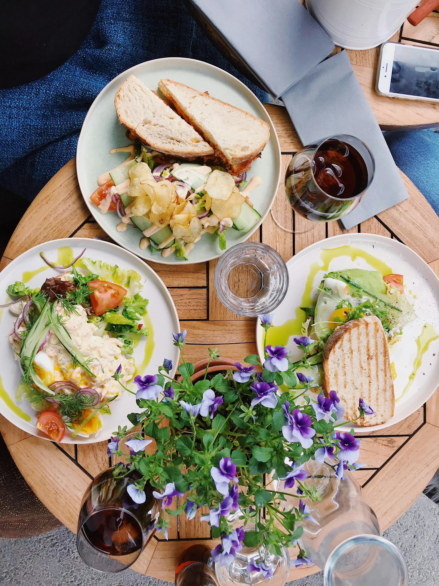
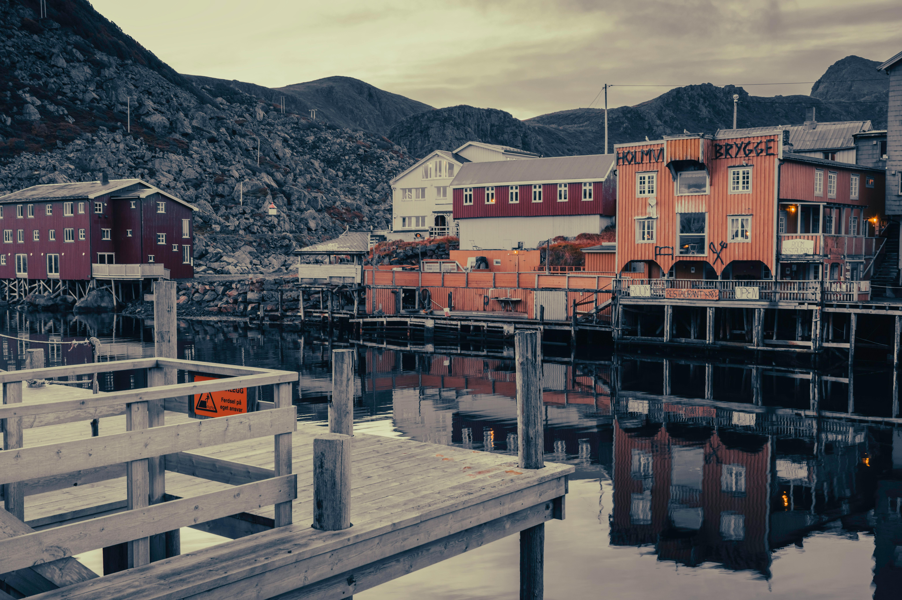
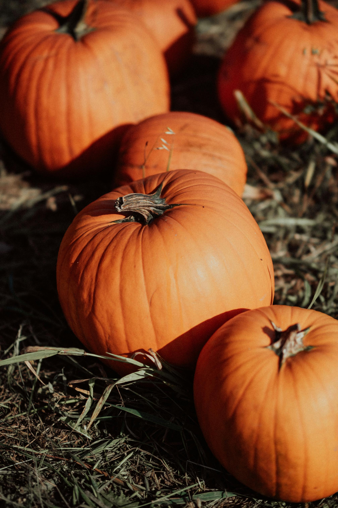
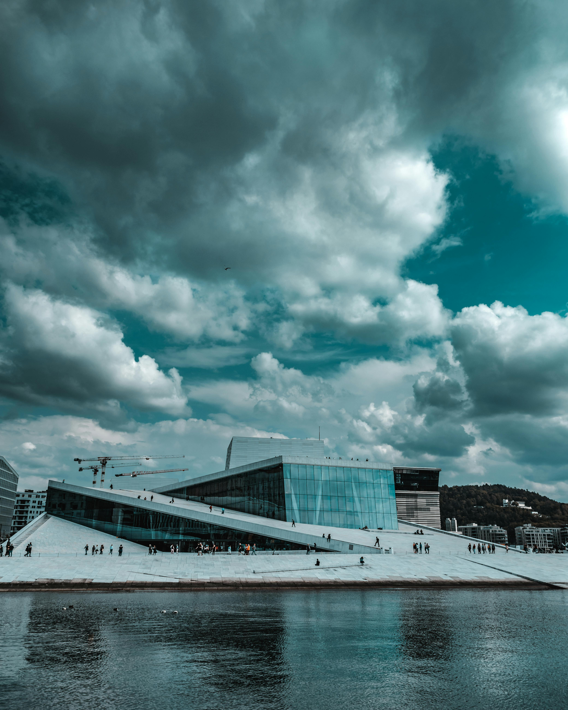
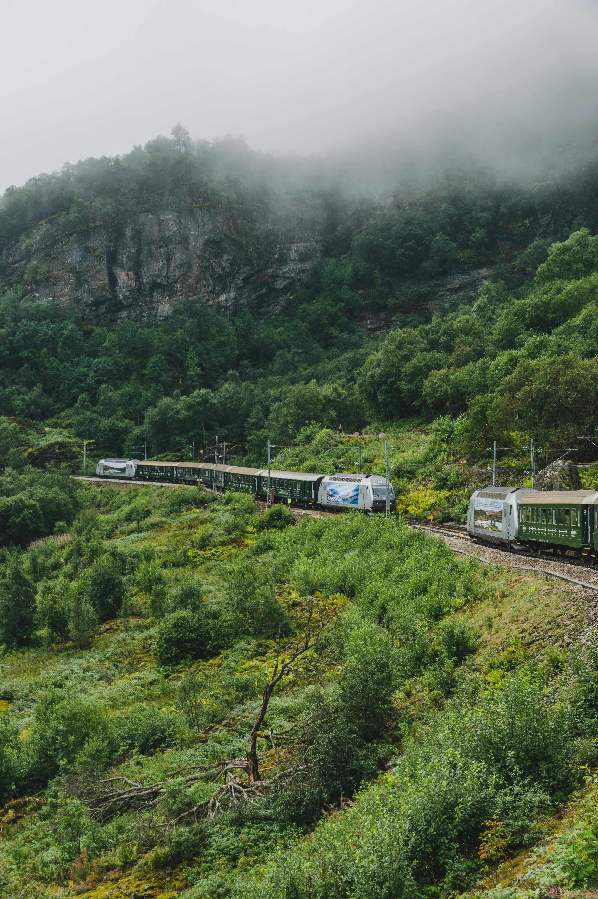
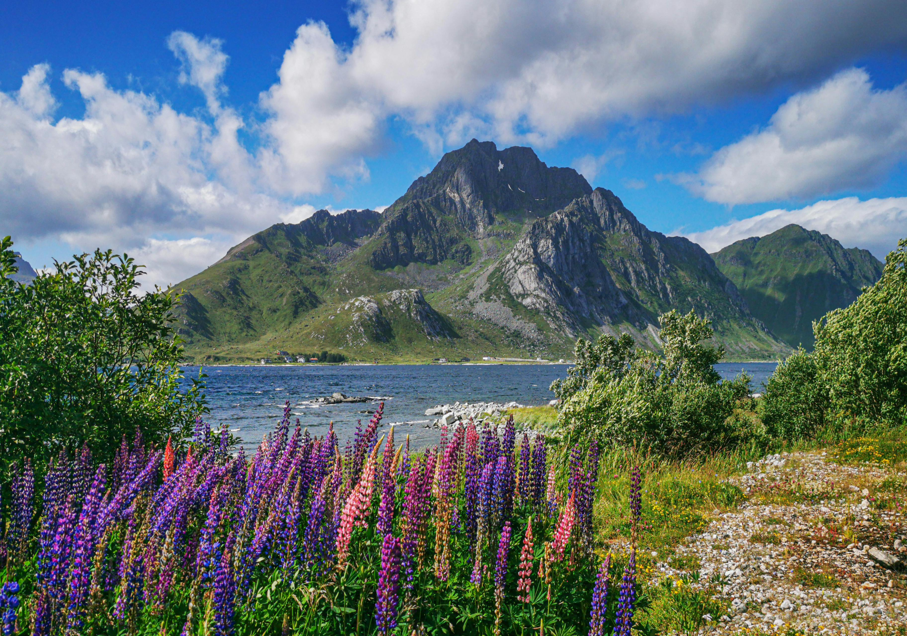
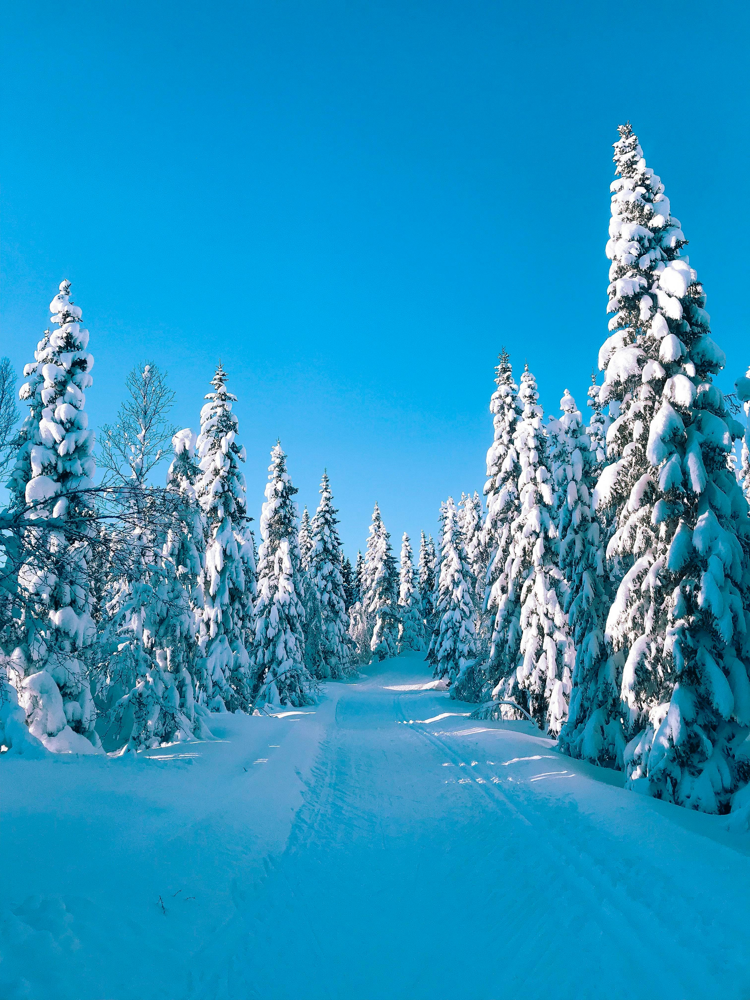

Best Travel Tips

- Best Time to Visit: Summer (June to August) for long days and pleasant weather; Winter (December to March) for northern lights and winter sports.
- Transportation: Trains and buses are reliable and scenic. Renting a car is ideal for exploring rural areas and fjords.
- Language: Norwegian is the official language, but English is widely spoken throughout the country.
- Currency: Norwegian Krone (NOK); credit cards are accepted almost everywhere.
- Health & Safety: Norway is one of the safest countries in the world, with excellent healthcare facilities.
Best Cuisines and Dining Recommendations

- Rakfisk: Fermented fish served with flatbread and sour cream.
- Klippfisk: Salted and dried cod, often used in various traditional dishes.
- Lefse: A traditional flatbread, usually served with butter and cinnamon.
- Kjøttkaker: Norwegian meatballs served with mashed potatoes and gravy.
- Brunost: Sweet, brown goat cheese, a popular Norwegian delicacy.
Best Accommodation Options

- Fjord Cabins: Stay in traditional wooden cabins with stunning views of the fjords.
- Luxury Hotels: High-end hotels in Oslo and Bergen offering comfort and style.
- Hytter: Cozy mountain cabins, perfect for hiking and exploring the countryside.
- Budget Hostels: Affordable hostels in major cities like Oslo and Trondheim.
Best Local Culture and Traditions

- Sami Culture: Learn about the indigenous Sami people and their traditions in northern Norway.
- Norwegian Folklore: Trolls and mythical creatures play a big role in local stories and legends.
- Festivals: Norway celebrates several festivals like the Bergen International Festival and Sami Week.
- Traditional Music: Listen to the sounds of the Hardanger fiddle, a traditional Norwegian instrument.
- Norwegian National Day: Celebrate on May 17th with parades and cultural events across the country.
Best Top Tourist Attractions

- Geirangerfjord: One of Norway’s most famous fjords, known for its dramatic scenery and waterfalls.
- Lofoten Islands: Stunning islands with dramatic landscapes, perfect for hiking and fishing.
- Bryggen, Bergen: UNESCO World Heritage site, showcasing colorful wooden buildings on the waterfront.
- Tromsø: The gateway to the Arctic, ideal for seeing the northern lights and experiencing Sami culture.
- Preikestolen (Pulpit Rock): Famous cliff with breathtaking views of Lysefjord.
Best Transportation Guides

- Trains: Norway has one of the most scenic railway routes, including the famous Bergen Railway.
- Ferries: Hop on ferries to explore the fjords and coastal towns.
- Car Rentals: Ideal for exploring rural areas, fjords, and mountains at your own pace.
- Domestic Flights: Quick and efficient flights connect cities like Oslo, Bergen, and Tromsø.
Best Outdoor Activities and Adventure

- Hiking: Norway offers incredible hikes like Trolltunga, Preikestolen, and Besseggen Ridge.
- Skiing: Popular ski destinations include Hemsedal, Trysil, and Geilo for alpine and cross-country skiing.
- Fjord Cruises: Take a scenic cruise along Geirangerfjord, Sognefjord, or Hardangerfjord.
- Northern Lights: Visit Tromsø or Lofoten to witness the spectacular aurora borealis in winter.
- Whale Watching: Tromsø and Vesterålen are great spots for whale watching in winter.
Best Weather and Best Time to Visit

- Winter (Dec-Feb): Cold with snow, perfect for winter sports and northern lights.
- Spring (Mar-May): Flowers bloom and the days get longer, ideal for city visits and outdoor exploration.
- Summer (Jun-Aug): Warm with long daylight hours, great for hiking and exploring the fjords.
- Autumn (Sep-Nov): Cooler with colorful foliage, great for scenic drives and city breaks.